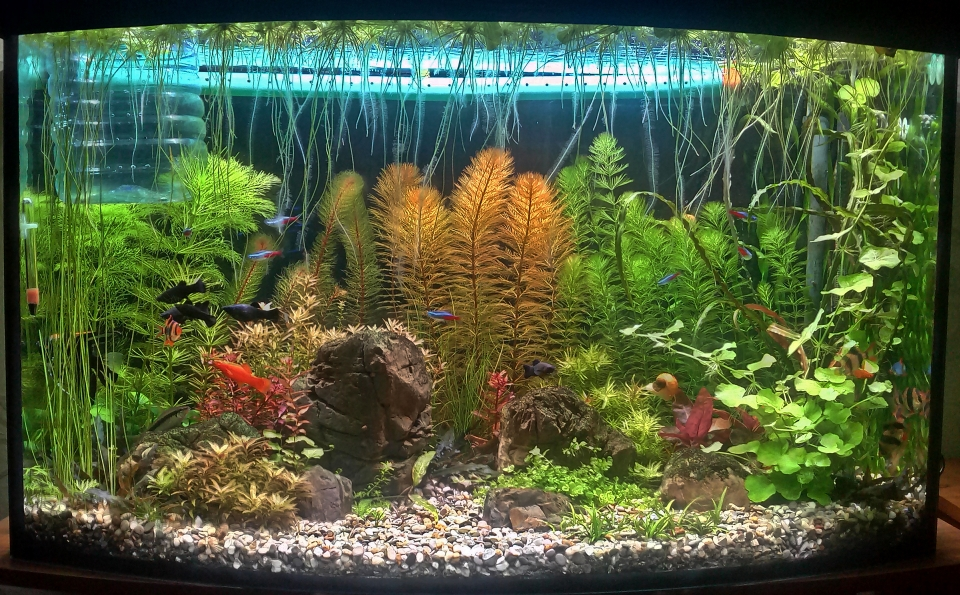

10.03.2018
Не знаю чи правильна була гіпотеза стосовно браку фосфора – але після заміни макро добрива з N-K-P на P-K зелень зі скла майже зникла, на каміннях та рослинах ксен не ріс, а залишки доїдали жиріючі теодоксуси. Крім того прокинулася індійська ротала та дідіпліс діандра! Начебто життя налагоджувалася. Та все більше читаючи по темі, дійшов до висновку що бажаю мати травник. А мій поки що це визначення не тягнув. Із світлом проблема була вирішена. З добривами – наче теж. Залишалося підміна води та подача вуглекислого газу. Воду щотижня і раніше підміняв - 25% з під крану, та тепер почав додавати 20 л кодацької. Про газ – почав думати.